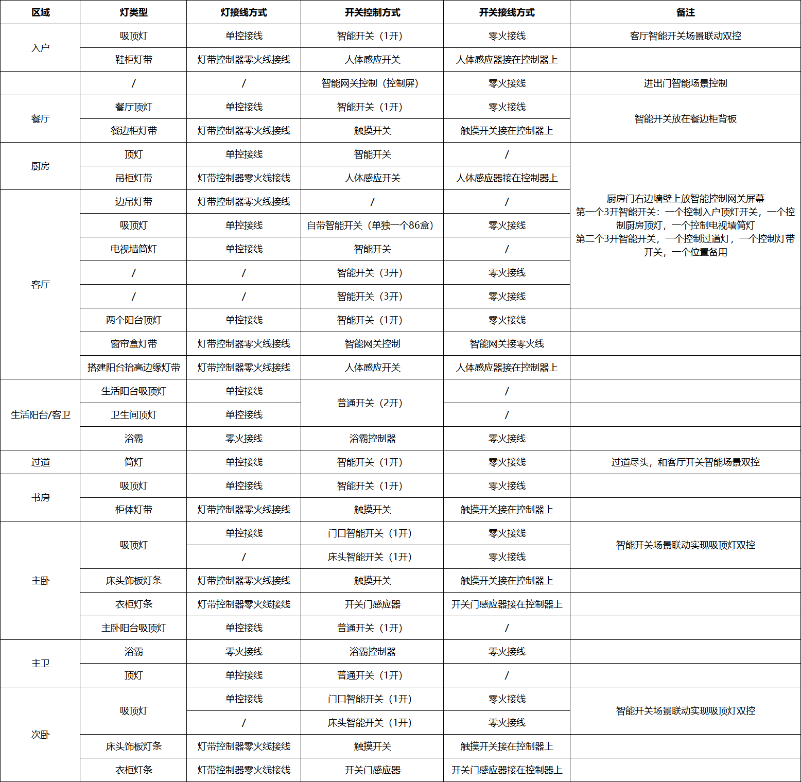

最近在 V2EX 上看到一个帖子，楼主分享了自己的全屋智能灯光设计方案，引发了网友们的热烈讨论。本文整理了帖子中的核心问题和网友们的实战经验，希望能给正在装修或改造智能家居的朋友一些参考。
楼主原方案
楼主计划使用小米中枢网关全部接入米家控制，整理了一个表格（见下图）：

网友核心建议
一、灯具选择建议
1. 风扇灯推荐
网友经验：餐厅可以考虑用风扇灯，现在有超薄款的隐藏扇叶款，既不压层高，不吹风的时候扇叶也可以回缩进灯体。天气热的时候吃饭就不用开空调了。次卧考虑到很多老人不舍得开空调，强烈建议用风扇灯。
选择要点： - 选择超薄隐藏扇叶款 - 不使用时扇叶回缩，不压层高 - 夏天吃饭不用开空调，节能舒适
2. 吸顶灯 vs 筒灯
网友经验：入户吸顶灯可以换成筒灯，至少两个以上。入户用泛光型筒灯+灯带，可以在天花顶上加装嵌入式人体感应器，人在亮灯，人走灭灯，没必要装吸顶灯压层高。
建议： - 入户：筒灯 + 灯带，简洁不压层高 - 阳台：IP65 防水防尘吸顶灯（蚊子会在吸顶灯里产卵） - 过道：不建议筒灯，照度不均匀会显空间逼仄，建议灯带
3. 灯带选择
网友经验：厨房吊柜灯带最好用硅胶灯带，防水防尘等级 IP65，裸板灯带渗入油污会大大减少使用寿命，亮度控制在每米 12W 左右。
选择要点： - 厨房：IP65 硅胶灯带 - 柜子灯带：铝型材条 + 灯带 + PC 罩 - 注意：柜子里的灯带除大扫除外基本不开，小夜灯反而更实用
二、灯光设计避坑
1. 灯下黑问题
网友经验：厨房和书房只有一个吸顶灯，容易灯下黑。操作基本靠墙，背对光源，切菜、看书都是灯下黑。厨房必须在吊柜下方装灯带，这样操作时台面永远是亮堂的。
解决方案： - 厨房：平板灯 + 吊柜下方灯带 - 书房：吸顶灯 + 书桌台灯/书柜灯带 - 餐厅：风扇灯居中 + L 形吊顶一圈筒灯
2. 灯具瓦数选择
网友经验：注意瓦数，按房间面积选灯容易翻车。功率大了可以在米家调暗，但不够就很难办。
建议：宁大勿小，瓦数选大一些，可以通过智能调光控制亮度。
3. 阳台灯光
网友经验：生活阳台要考虑挂满衣服时的效果，把一个吸顶灯换成两个放两边，因为自动晾衣架居中了。
三、智能控制方案
1. 开关选择
| 开关类型 | 优点 | 缺点 | 建议 |
|---|---|---|---|
| 智能开关 | 可远程控制 | 动作时咔哒声明显，夜里刺耳 | 卧室慎用 |
| 触摸开关 | 墙面简洁 | 响应不灵敏，手汗腐蚀 | 不推荐 |
| 自回弹开关 | 断路后也可远程控制 | - | 推荐 |
| 无线开关 | 可随意放置 | 需定期换电池 | 床头/沙发旁 |
网友经验：远离触摸开关，除非刚需场景。应该去掉触摸开关，变压器直接接智能通断器，然后独立智能控制或和周围的灯联动。比如餐边柜灯带就可以和餐厅灯联动开关。
2. 人体感应器
适用场景： - ✅ 入户：人在亮灯，人走灭灯 - ✅ 卫生间：自动开关灯 - ✅ 厨房：检测到人自动开灯 - ⚠️ 阳台地台：容易忽明忽暗 - ❌ 客厅/卧室：会添乱
网友经验：人体感应在卫生间这种不会久待的地方体验还可以，客厅这种长时间会有人的地方偶尔不准确，导致后来基本废弃。家中如果有宠物更废了。
建议： - 入户/厨房/卫生间：推荐人体感应 - 客厅/卧室：用多键开关一键切换场景
3. 调光功能
网友经验：得选能调光的灯，白天高亮，夜里过了 11-12 点最低亮度。走廊夜灯常亮，这样基本不用自动开灯了。
配置建议： - 选择可调光的智能灯 - 设置时间段自动调光 - 夜间模式：最低亮度 + 暖色温
四、各房间配置建议
入户
- 门锁 + 门窗传感器
- 筒灯 x 2 + 灯带
- 嵌入式人体感应器
- 鞋柜镂空位：侧装人体传感器
- 鞋柜底部：感应灯带
厨房
- 平板灯 300x600mm，功率至少 36W，6500K 白光
- 吊柜下方：IP65 硅胶灯带
- 人体传感器（顶装或冰箱侧装）
- 水浸传感器、烟雾传感器、天然气传感器
卫生间
- 人体传感器（顶装或浴室柜侧装）
- 浴霸：双电机，纯铜电机
- 自动开关灯
卧室
- 风扇灯（推荐）
- 床底：人体传感器或感应灯带
- 门口：智能开关
- 床头：无线开关
客厅
- 电视墙：智能灯带 + 智能射灯
- 沙发两侧：智能筒灯（注意眩光）
- 中枢网关放电视柜
阳台
- IP65 防水防尘吸顶灯
- 考虑挂满衣服时的照明效果
五、其他建议
凉霸
网友经验：厨房可以考虑装一个凉霸，汗大感觉很有用。
说明：凉霸把吊顶上面的风吹下来，夏天做饭不用开空调。
智能灯光设计
网友经验：灯光仅仅智能还不够，灯光也是室内设计的重要部分，建议找设计师设计灯光，再来设计智能。
总结
全屋智能灯光设计的核心要点：
- 灯具选择：风扇灯、筒灯、灯带组合使用，注意瓦数宁大勿小
- 避免灯下黑：厨房、书房等操作区要补灯
- 开关选择：自回弹开关 > 智能开关 > 触摸开关
- 人体感应：入户/厨房/卫生间适用，客厅/卧室慎用
- 调光功能：必选，配合时间段自动调节
- 防护等级：厨房灯带 IP65，阳台吸顶灯 IP65
最后，智能灯光不仅是技术问题，更是设计问题。建议先做好灯光设计，再考虑智能化方案。
参考来源：V2EX